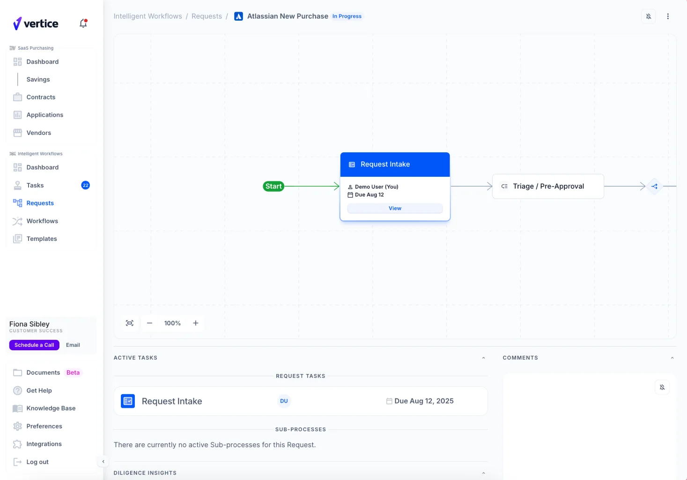
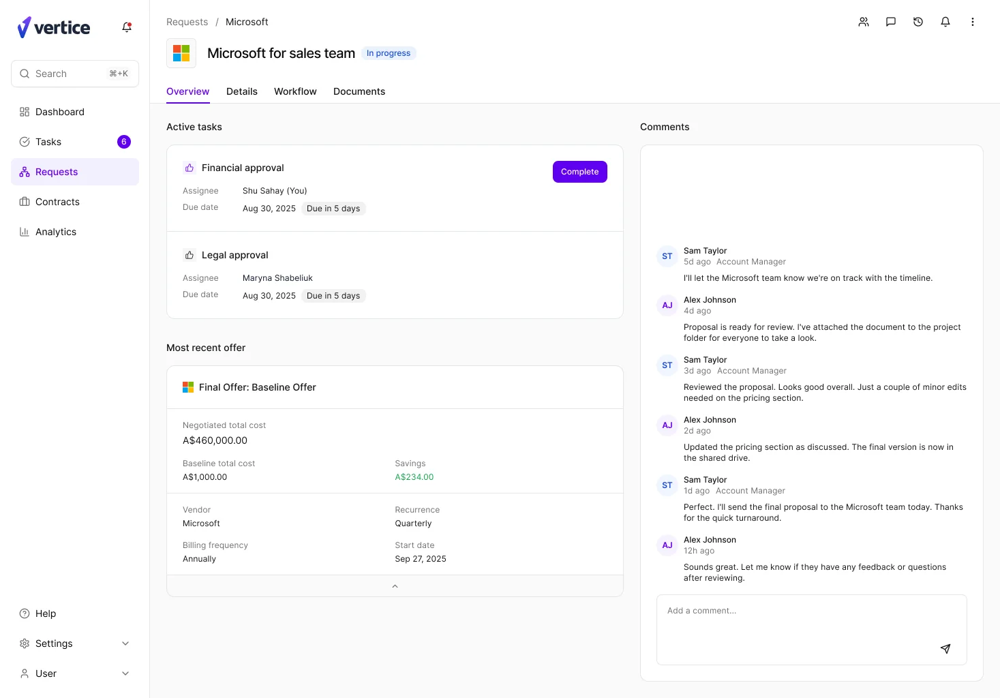
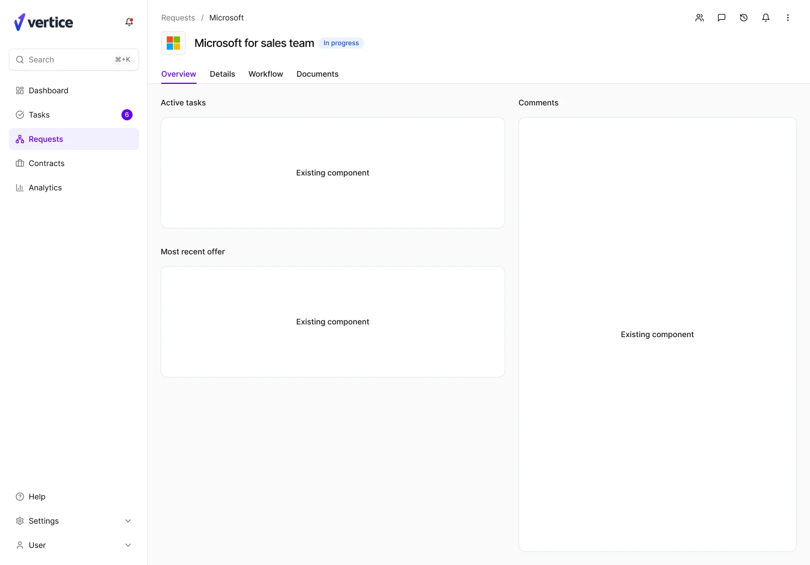

Redesigning the request experience
Rebuilt the request page around real user research. CSAT up 32%, time to complete down 27%.
Overview
Vertice helps companies buy and renew software at the best price, saving them millions. The platform centres on two core objects, contracts and new purchase requests, and the request page carries both renewals and new software requests through the workflow. I led its redesign, lifting CSAT by 32% and cutting time to complete a request by 27%.
Context
The request page is critical to the Vertice experience: it supports both renewals and brand-new software requests. But the original design failed to support either use case effectively, putting SaaS platform adoption and CSAT at risk.


Role & team
- Took ownership of the initiative within two weeks of joining Vertice
- Partnered closely with Product, Engineering, and Data to define the problem space and align on success metrics
- Led discovery across internal and external users to uncover friction in key workflows
- Collaborated with 3 Product Managers and 3 engineering squads, plus Customer Success, Sales, and Data to validate solutions and measure impact
Process
Redesigning key pages
I led this initiative from week two after joining, working with Product, Engineering, and Data Science to understand the problem. I interviewed dozens of internal and external stakeholders to understand the pain points and desires of the primary users, then defined new components and patterns across the product.
Designing scalable components
I audited the existing UI to identify inconsistencies and duplication, then built a flexible component system to support multiple workflows and edge cases, balancing speed of delivery against long-term maintainability. Usage guidelines let designers and engineers build confidently and consistently from there.
Every decision started from what the user was trying to get done, then had to survive what was technically feasible in the time we had. Where the ideal pattern was not buildable, I looked for the version that kept the user's goal intact and could still ship. Much of what came out of it was reusable beyond this page: the widget component pulled every existing offer and contract card onto a common visual identity, so the same building blocks now serve the request page and the rest of the platform.
Improving communication
I mapped stakeholder touchpoints across the end-to-end workflow, identified where handoffs between teams were breaking down, and simplified the information architecture to surface the right context at the right time. Clearer status visibility and structured updates cut down on ambiguity and back-and-forth.
Shipping in milestones
We were time constrained and the redesign had to reach users in pieces rather than all at once, so I broke it into milestones. The first was the page header and the layout, the frame everything else sits in. Agreeing the structure early meant engineering could start building while the individual components were still being designed, and each one then dropped into a page that already held its shape.

Impact
32% increase in CSAT
-27% time to complete a request
41% improvement in task completion
Internal teams moved faster with clearer ownership and less back-and-forth. External users gained better visibility into their requests, reducing confusion and cutting support tickets. The redesigned experience drove higher engagement and stronger adoption across the platform.
What's next
The next focus is redesigning the contract page to align with the new request experience. Due to time constraints, some enhancements were intentionally scoped for a second phase. The contract page will extend the same patterns and components, keeping workflows consistent while cutting design and engineering duplication. This phase will:
- Unify the experience across contracts and requests
- Increase component reuse to improve development efficiency
- Further streamline the user journey and reduce cognitive load
Want the full walkthrough: the component system, the stakeholder interviews, what's coming for contracts?
Get in touch for the full presentation